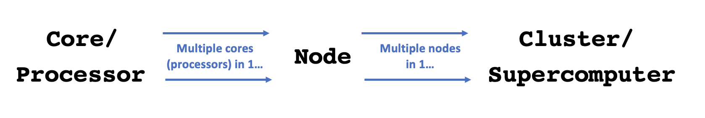

A closer look at OSC
Week 6 - part I
In this short session, we will touch on some aspects of the Ohio Supercomputer Center (OSC) that we did not talk about during our initial OSC introduction in week 1 of this course.
OSC Projects
In this course, we are exclusively using the course’s OSC Project PAS2700. When you use OSC for your own research project, you would use a different OSC Project, one that’s likely either specific to a research project or grant, or that is your lab/PI’s general use OSC Project.
Generally, only PIs request OSC projects, and they typically manage them as well. OSC has this page with more information on how to do so. Whoever manages an OSC Project can add both existing OSC users and new users to the Project. Anyone added to an OSC Project will have access to the project’s directories, and will be able specify this Project when issuing compute node resource requests.
OSC will bill OSC Projects (not individual users), and only for the following two things:
- File storage in the Project Storage file system
- Compute node usage per “core hour” (e.g. using 2 cores for 2 hours = 4 core hours)
The prices for academic usage are quite low (see this page for specifics), and at OSU, they are often covered at the department level so individual PIs often do not have to directly pay for this at all.
Hierarchical components
In week 1, you learned that a supercomputer center like OSC typically has multiple supercomputers, each of which in turn consists of many nodes. But I omitted a fourth “level” in this hierarchy:
- Core / Processor / CPU / Thread — Components of a computer/node that can each (semi-)independently be asked to perform a computing task like running a bioinformatics program. With most bioinformatics programs, you can also use multiple cores for a single run, which can speed things up considerably. While these four terms are not technically all synonyms, we can treat them as such for our purposes.

File systems
Let’s expand our earlier list of file systems, and look at this table in a bit more detail:
| File system | Located within | Quota | Backed up? | Auto-purged? | One for each… |
|---|---|---|---|---|---|
| Home | /users/ |
500 GB / 1 M files | Yes | No | User |
| Project | /fs/ess/ |
Flexible | Yes | No | OSC Project |
| Scratch | /fs/scratch/ |
100 TB | No | After 90 days | OSC Project |
| Compute | $TMPDIR |
1 TB | No | After job completes | Compute job |
We’ve been working in the “Project dir” (/fs/ess/) for this course’s OSC project PAS2700. When you use OSC for your own research project with a different OSC Project, I would recommend that you also work mostly in the Project (/fs/ess/) dir, which offers backed up, permanent and flexible amounts of storage.
One other hand, Scratch dirs are temporary and not backed up, while the storage space of Home dirs is limited and cannot be expanded1. Compute storage space is linked to compute jobs and extremely fleeting: as soon as the compute “job” in question has stopped, these files will be deleted. So when are non-Project file systems useful?
- Your Home dir can e.g. be useful for files that you use across projects, like some software.
- Scratch has the advantages of having effectively unlimited space and much faster data read and write (“I/O”) speed than Home and Project space. It therefore regularly makes sense to run analyses on Scratch, and copy over files that you will continue to need.
- Compute storage has even faster I/O so can be useful for very I/O-intensive jobs — but using it requires some extra code in your script2 and for better or worse, I personally end up using this very rarely.
Home and Project directories are backed up daily. You don’t have direct access to the backups, but if you’ve accidentally deleted important files, you can email OSC to have them restore your files to the way they were on a specific date.
File systems are shared among OSC’s clusters, such that you can access your files in the exact same way regardless of which cluster you have connected to.
Compute nodes
Compute nodes come in different shapes and sizes:
- “Standard nodes” are by far the most numerous (e.g., Owens has 648 and Pitzer has 564) and even those vary in size, from 28 cores per node (Owens) to 48 cores per node (the “expansion” part of Pitzer).
- Some examples of other types of nodes are nodes with extra memory (
largememandhugemem) and nodes that provide access to GPUs (Graphical Processing Units) rather than CPUs.
Standard nodes are used by default and these will serve you well for the majority of omics analysis. But you may occasionally need a different type of node, such as for genome or transcriptome assembly (you’ll need need nodes with a lot of memory) or Oxford Nanopore sequence data base-calling (you’ll need GPUs).
When we talk about “memory”, this refers to RAM: the data that your computer has actively “loaded” or in use. For example, if you play a computer game or have many browser tabs open, your computer’s memory will be heavily used. Genomics programs sometimes load all the input data from disk into memory to allow for fast access, or they will hold a huge assembly graph in memory, and therefore may need a lot of memory as well.
Don’t confuse memory with file storage, the data that is on disk, some of which may have been unused for years.
Using compute nodes
You can use compute nodes by putting in a request for resources, such as the number of nodes, cores, and for how long you will need them. These requests result in “compute jobs” (also simply called “jobs”).
Because many different users are sending such requests all the time, there is software called a job scheduler (specifically, Slurm in case of OSC) that considers each request and assigns the necessary resources to the job as they become available. We’ve already been running compute jobs by running VS Code via OnDemand, and we will talk about submitting scripts as “batch jobs” this week.
Putting it together
Let’s take a look at the specs for Owens now that we understand a supercomputer’s components a bit better:

- When you use OSC, it’s good practice to acknowledge and cite OSC in your papers, see their citation page.
- For many questions such as if you have problems with your account, have problems installing or using specific software, or don’t understand why your jobs keep failing, you can email OSC at oschelp@osc.edu. They are usually very quick to respond!